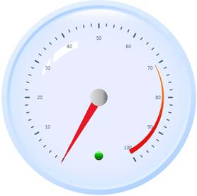
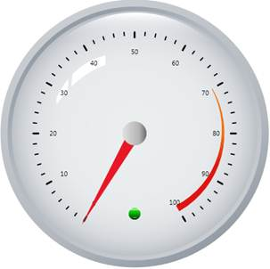
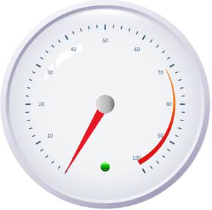
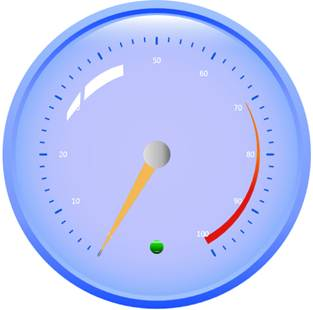
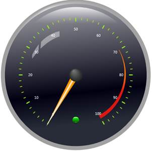
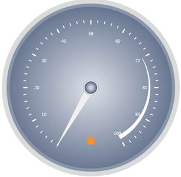
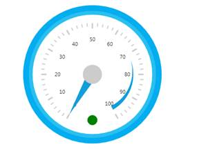

The following code snippet explains how to set the VisualStyle in XAML for Circular Gauge.
|
[XAML]
<syncfusion:CircularGauge Name="gauge" HorizontalContentAlignment="Center" HorizontalContentAlignment="Center" Syncfusion:SkinStorage.VisualStyle="Office2007Blue" />
|
The following code snippet explains how to set the VisualStyle in C# for Circular Gauge.
|
[C#]
SkinStorage.SetVisualStyle(gauge, "Office2007Blue");
|
The output is shown as below.

Figure 80: Office2007Blue
The following images illustrate the various skins applied to the Circular Gauge.

Figure 81: Office2007Black

Figure 82: Office2007Silver

Figure 83: Office2003

Figure 84: Blend

Figure 85: VS2010

Figure 86: Metro